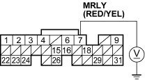
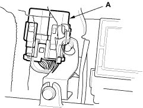
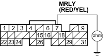

DTC P0563: ECM Power Source Circuit Unexpected Voltage
- Reset the ECM (see page 11-4).
- Turn the ignition switch OFF.
- Wait 5 seconds.
- Turn the ignition switch ON (II).
Is DTC P0563 indicated?
YES - Go to step 5.
NO - Intermittent failure, system is OK at this time. Check for poor connections or loose wires at the No. 6 ECU (ECM) (15 A) fuse in the under-hood fuse/relay box and at the ECM. 
- Turn the ignition switch OFF.
- Disconnect ECM connector E (31P).
- Measure voltage between ECM connector terminal E7 and body ground.
ECM CONNECTOR E (31P)

Wire side of female terminals
Is there battery voltage?
YES - Go to step 11.
NO - Go to step 8.
- Remove the glove box.

- Remove the PGM-FI main relay 1 (A).
LHD model:

RHD model:

- Check for continuity between ECM connector terminal E7 and body ground.
ECM CONNECTOR E (31P)

Wire side of female terminal
Is there continuity?
YES - Repair short in the wire between the ECM (E7) and the PGM-FI main relay 1.
NO - Replace the PGM-FI main relay 1.
- Reconnect ECM connector E (31P).